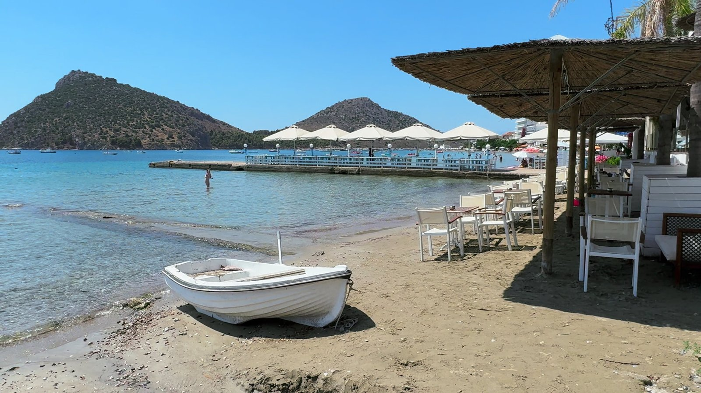
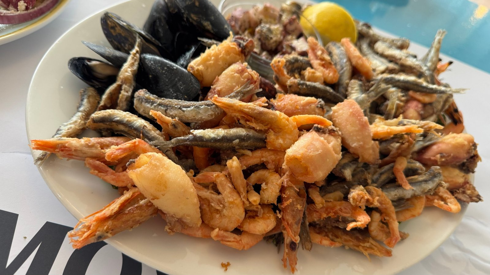
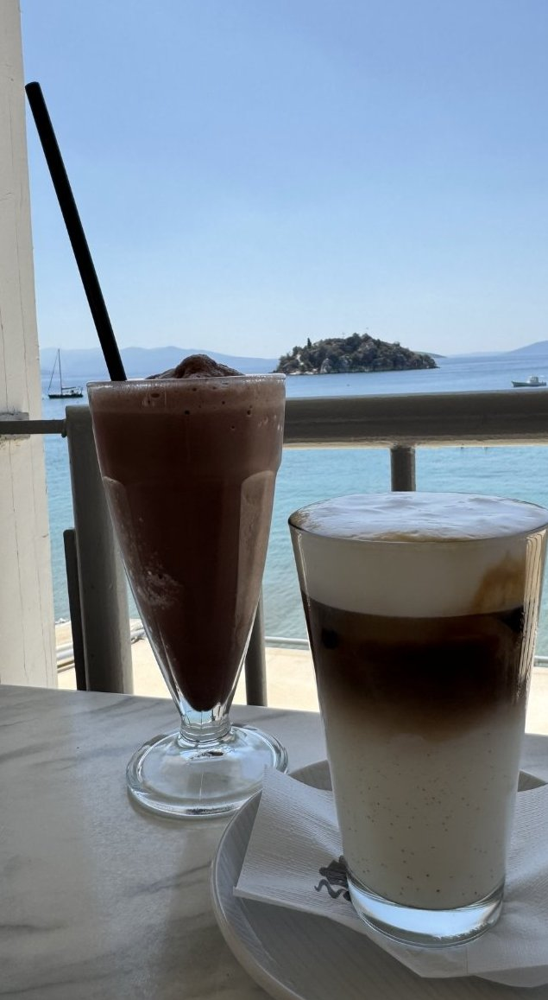
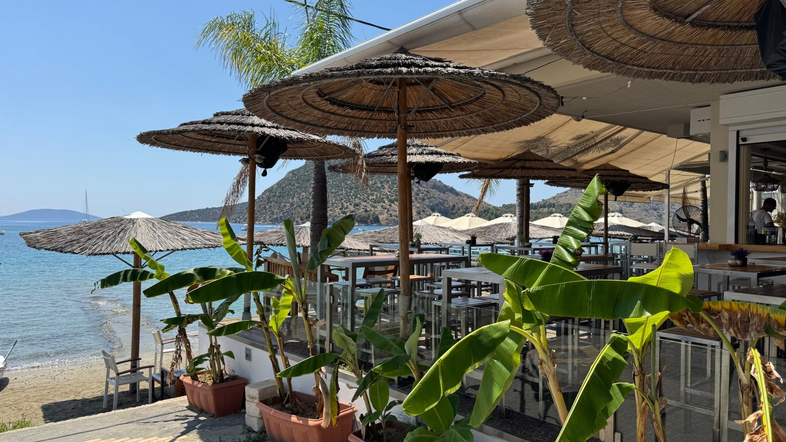
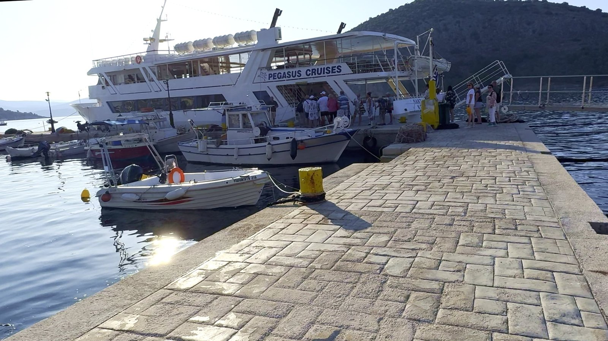

There are places you visit because they're bursting with history, others because they have beautiful beaches, and then there are places that are simply rather good at making you feel you're on holiday. Tolo, on the Argolis Gulf in the Peloponnese, falls firmly into the latter category.
We arrived with eight days ahead of us, a sea-view apartment, plenty of places to explore and absolutely no intention of doing very much at all. Well, that was the plan. Tolo turned out to be a pleasant, lively seaside resort with plenty going on, some excellent food and a few little discoveries that became part of our daily routine. It wasn't quite the traditional Greek village we usually fall in love with, but it certainly had its charms.
WHAT IS TOLO LIKE? A TRADITIONAL GREEK SEASIDE RESORT?
Tolo sits on the Argolis Gulf, around 10 kilometres south of Nafplio. It's a popular summer resort, particularly with Greek holidaymakers, and has grown from a small fishing village into a busy seaside destination.
The setting is lovely. A long curve of sandy beach follows the bay, backed by a mixture of hotels, apartments, holiday shops, cafés and waterfront restaurants. Little boats bob about in the harbour, the hills rise behind the town and the islands offshore give the whole place a rather attractive Mediterranean backdrop.

The main beach, Psili Ammos, stretches for approximately a kilometre and has soft sand and wonderfully shallow, calm water. It's an ideal spot for families and anyone who prefers their swimming without having to negotiate a sudden drop into the deep end.
Tolo isn't short of places to eat or drink either. There are traditional fish tavernas, more upmarket restaurants, coffee shops and plenty of little shops selling all the usual holiday essentials. It's lively without feeling like a huge resort, although in the height of summer it certainly knows how to attract a crowd.
What struck us was how much of a Greek holiday destination it is. There weren't masses of foreign tourists during our stay, and it felt as though we'd found somewhere where Greek families come to enjoy their own summer holidays.
OUR TOLO APARTMENT – THE VIEW MADE ALL THE DIFFERENCE
We stayed in an Airbnb apartment, and whilst it certainly wasn't luxurious, it had everything we needed. In fact, the best thing about it wasn't the furnishings, the kitchen or the facilities. It was the balcony.
With lovely seating and a wonderful view across the sea, it was somewhere we could happily sit with a drink and watch the world go by. Sometimes it's the simplest things that make a holiday accommodation special.
Our host was lovely too. We arrived in the middle of an enormous thunderstorm (because apparently Greece occasionally likes to remind you that it isn't permanently sunny). Once the storm had passed, she came up and swept the entire balcony, making sure everything was pristine for us.
Now that's what I call a welcome.
There was, however, one rather significant problem with our accommodation. Parking.
And I mean parking was a nightmare.
Tolo is not a place where you casually pop out in the car and expect to find a convenient space when you return. You literally have to drive round and round the town, waiting for somebody to leave. It's a sort of Greek version of musical chairs, except nobody is playing music and everyone is getting increasingly frustrated.
It really is one in, one out.
Our host was an absolute star and actually secured our parking space with her own car. When we arrived, she moved it so we could unload and park. This arrangement continued throughout our stay, but it did mean that every time we went out for the day, we faced the prospect of losing our precious space.
After eight days, I can honestly say that the parking situation had become a tad irritating. Lovely balcony, lovely host, lovely view. But a parking space had become the most valuable commodity in Tolo.
FOOD, FISH AND OUR NEW FAVOURITE EVENING RITUAL
On our first evening, we followed our host's recommendation and headed to Moustakias Fish Taverna.
What a recommendation!

We ordered a fish platter to share, and it was superb. But the location was almost as good as the food. Our table was practically on the water's edge, sitting on the sand, with the sea gently lapping around our feet. You really couldn't ask for a better setting for a Greek seafood dinner.
Fresh fish, a beautiful view and the sound of the sea. This is exactly why we keep coming back to Greece.
Tolo has plenty of other choices too. From traditional fish tavernas and family-run restaurants to more upmarket dining, coffee bars and little shops, there's something to suit most tastes and budgets.
But our biggest discovery was just around the corner from our apartment.
Kristina's Café.
This was where our love affair with cold chocolate and orange pie began. And when I say love affair, I mean it became a nightly ritual. We would head out, find ourselves a table and indulge in this rather wonderful combination.

I'm not entirely sure how many calories were involved, and frankly, I wasn't interested in finding out. Holidays are not the time for unnecessary investigations.
By the end of our stay, we had developed a routine that was difficult to break. Some people collect souvenirs.
We collect food habits.
BEST THINGS TO SEE AND DO IN TOLO AND NEARBY
Tolo is a good destination for anyone who enjoys a mixture of beach time, history, boat trips and exploring. Although the village itself is fairly compact, there is plenty to discover in the surrounding Argolis region.
1. Relax on Psili Ammos Beach

The main beach is Tolo's biggest attraction. Its long stretch of sand, shallow water and sheltered bay make it ideal for swimming and lazy beach days. You can hire sunbeds and umbrellas, enjoy water sports or simply find a spot and do absolutely nothing.
2. Take a boat trip to Hydra and Spetses
One of the highlights of our stay was a boat trip to the islands of Hydra and Spetses.

Both islands have their own character, and seeing them from the water makes for a lovely day out. Hydra is particularly picturesque, with its beautiful harbour, traditional architecture and car-free streets. Spetses has an elegant feel, with its waterfront cafés, historic buildings and lovely harbour.
It's a great way to break up your time in Tolo and see another side of Greece.
We booked our trip with Pegasus Cruises at a travel kiosk in Tolo and sailed on their boat, the Madelana. You can watch our day on the Madelana in Part 3 of our Peloponnese films. If you'd rather book ahead online, there are boat trips from Nafplio and Tolo on GetYourGuide.
3. Explore Nafplio
Just around 10–12 kilometres away, Nafplio is an absolute must. It's one of the prettiest towns in the Peloponnese, with Venetian architecture, narrow cobbled streets, attractive squares and a lovely waterfront.
Visit the impressive Palamidi Fortress, take a boat across to Bourtzi Castle or simply wander the old town and enjoy a leisurely lunch. We would happily recommend giving Nafplio a full day, although an evening visit is equally worthwhile. Read our Nafplio blog for more.
4. Visit Ancient Epidaurus
Around 35–40 kilometres from Tolo is the remarkable ancient theatre of Epidaurus. Dating back to the 4th century BC, it is famous for its extraordinary acoustics and is one of Greece's most impressive archaeological sites. It's still used for performances today.
5. Discover Mycenae
For history lovers, Mycenae is another excellent day trip. Around 30–35 kilometres away, this ancient civilisation is home to the famous Lion Gate, monumental tombs and enormous stone walls. It's a fascinating glimpse into ancient Greek history.
6. Discover the quieter beaches
If you fancy a change from Tolo's main beach, there are several lovely alternatives nearby:
- Plaka Beach: Near Drepano, a long stretch of coastline with beach facilities and places to eat.
- Vivari: A small coastal village with a lovely waterfront and fish tavernas.
- Kondyli Beach: A beautiful beach with clear water, a mixture of organised and quieter areas.
- Kastraki Beach: Close to the remains of Ancient Asini, combining a swim with a little history.
These are all worth considering if you have a car and want to explore beyond the main resort.
PRACTICAL TIPS FOR VISITING TOLO
A few things we learnt during our eight-day stay:
- Parking: If you're staying in an apartment or hotel, check the parking arrangements before booking. This would be top of our list. Don't assume you'll find a space easily.
- Getting around: A hire car is useful if you want to explore Nafplio, the archaeological sites and the surrounding beaches. Read our car hire tips, then compare prices on DiscoverCars, before you book.
- Getting there: Tolo is approximately 10–12 kilometres from Nafplio, with Mycenae and Epidaurus also within comfortable driving distance.
- Boat trips: Look into trips to Hydra and Spetses before your visit, particularly during the quieter months when schedules may be more limited.
- Beaches: Psili Ammos is the main attraction, but don't overlook Kondyli, Plaka and Kastraki.
- When to visit: June and September are good options if you want warm weather without the busiest summer crowds.
- Eating out: Try one of the traditional fish tavernas along the waterfront. Eating with your feet practically in the sea is an experience worth having.
OUR VERDICT – WOULD WE VISIT TOLO AGAIN?
Tolo was a lovely place to spend eight days, and we certainly enjoyed our time there. The food was excellent, our apartment had a wonderful view, our host was fantastic and the boat trip to Hydra and Spetses was a real highlight.
But would we return?
Probably not.
It just didn't have that traditional Greek village feel that we tend to fall in love with. We prefer somewhere with a little more character, quieter streets and that feeling of having discovered somewhere special. And, quite honestly, the parking situation tested our patience more than once.
However, that doesn't mean we wouldn't recommend it.
As a base for exploring the Argolis region, it's excellent. You have beautiful beaches, fascinating ancient sites, Nafplio on your doorstep and some wonderful islands within reach.
Sometimes a destination doesn't have to be somewhere you want to return to forever. It just has to be somewhere you enjoyed discovering.
And Tolo certainly gave us eight enjoyable days, some superb seafood and a rather unhealthy addiction to cold chocolate and orange pie.
I'd say that's a pretty good holiday.